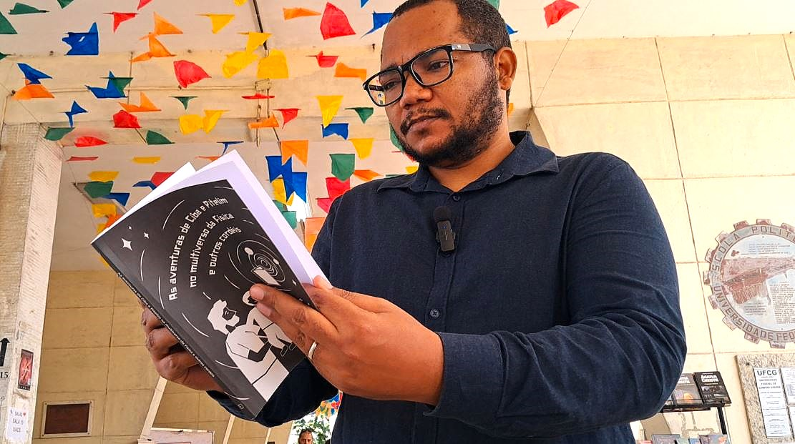

Primeiro parágrafo da matéria.
Segundo parágrafo. Continue o texto normalmente.
Intertítulo opcional
Novo bloco de texto.
Parágrafo final ou continuação da matéria.
RESUMO CURTO DA MATÉRIA.

Primeiro parágrafo da matéria.
Segundo parágrafo. Continue o texto normalmente.
Novo bloco de texto.
Parágrafo final ou continuação da matéria.